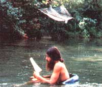
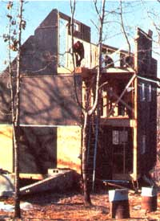
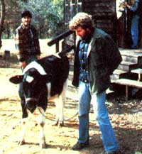

It's 8:00 and already getting dark ... too soon for the day to end. Maureen has just finished milking; the children are shouting as they play in the grounded canoes; the sound of piano music wafts on the wind. James and Damien walk by on their way to the shower house. Louise is going up to the industrial building to weave hammocks. I'm just sitting, watching the sun set behind the trees, purpling the clouds and the mist that lies on the valley.
My community is called East Wind. What is it? It's land, buildings, people, values, and the ideal of "community" that all of us here are sometimes filled with. It's not utopia or paradise, but it's a way of life that we have some control over, that we can create and keep creating to fill our needs, desires, and dreams. It's a living, changing organism that grows-sometimes intentionally, sometimes in confusion. It stubs its toe and cries, celebrates, gets distracted, and occasionally has to redecide where it's going. Community, you see, is not a finished product but a process.
East Wind is located on 160 acres in the Missouri Ozarks near the Arkansas border. We lease an additional 200 acres to grow hay and grain for our beef and dairy herds. We are self-sufficient in dairy products, supply many of the eggs we need, and have a one-and-a-halfacre garden.
We also market hammocks (from our own rope products industry), "Pendulum" chairs, and "Utopian" sandals. In 1981 another enterprise was started: providing nut butters-peanut , almond, and cashew-and sesame tahini to food co-op warehouses across the country.
There are now about 50 of us, including four children, and three babies are on the way. Our long-term plan is to grow to 750 ... but slowly enough to be economically and ecologically sound. We're striving to be a planned and fully integrated community that deals with the complexities of life in as sane, logical, caring, and equitable a fashion as possible. To help realize that goal, we have a labor system which insures that work gets done when, where, and how we desire. We provide health care for our members, from delivering babies to caring for our sick. We have a program of Montessori education and 24-hour child care. We provide lunch and dinner for everyone every day (as well as a short-order breakfast two days a week), and we routinely take part in such activities as trash collection and vehicle maintenance.
We've chosen to base our society on cooperation ... as an alternative to the material wastefulness, competitiveness, and isolation of the "outside" world. Thus, we hold our land, labor, and businesses in common. All income generated by our activities belongs to the community, and we decide as a group what projects we'll undertake, what goods we'll purchase, and how we'll divide them. Since we share the use of our vehicles and laundry and kitchen facilities, we need fewer of them to provide "enough." And we guarantee that our members have adequate food, clothing, and shelter without having to compete with one another for these things.
East Wind tries to fulfill its members' social needs through discussion groups, assertiveness training workshops, a newly formed "Emotional Health Team," and various recreational activities, among other things. We try to provide the greatest good for the greatest number without losing sight of the minority's interests. We aim for feelings of support, trust, and interdependence ... feelings, in short, of community.
Our group is also committed to equality in as many ways as we can find. We give all our members the same access to jobs, training opportunities, and positions of responsibility. (Yes, Virginia, you too could be a compost manager or learn to run one of our half-million-dollar businesses!) Our weekly discretionary funds and vacation money-albeit somewhat limited-are allotted equally, and all labor is valued the same, whether in industry, child care, agriculture, or housekeeping. Everyone shares equally in the work and in its benefits.
Physical violence is one of the few offenses for which one's membership can be terminated. We don't choose to relate to one another in that manner. Instead, we support facilitated conflict resolution, use of intermediaries, or even writing angry papers back and forth. (Yes, we do still have our little flare-ups now and then.) This nonviolence among ourselves and the fact that we're miles from paved roads and outsiders create a tremendous sense of physical security. It does my paranoid citybred heart good to be completely unconcerned about footsteps coming up behind me at 3:00 AM. I know they come from someone who will do me no harm and may even want to share a cup of tea before bed.
East Wind has no powerful or charismatic leaders but instead elects a three-person board of planners. These people serve an 18-month term and are responsible for facilitating meetings, nominating their own successors, and helping to guide the community through proposals and discussions. Decisions are made by majority vote, with provisional members having a partial vote.
Every now and then-when we seem to be losing our direction and getting bogged down in petty differences-I sometimes wish we did have an all-knowing, firmly gentle guru to take over this task of building a new society. But East Wind is a community of mind, not of spirit. We came together out of dissatisfaction with the existing society. We're not here by inspirational guidance but by deliberate decision. We aren't waiting for the voice of God but are listening to one another and to voices within, planning and testing other ways of doing things and being together.
But wait! Does that sound too secular for you, too difficult? We do, in fact, have revelations ... and "miracles," too: seeing someone explain something calmly and logically to an angry child who then acts calmly and logically ... finding myself, who had never done anything mechanical, changing a water pump ... knowing how good, how much like "family" it feels as we 50 diverse individuals gather together for a Thanksgiving feast.
It's possible! It's working! Maybe community is more than a dream. Come and see for yourself... but please write first (East Wind Community, Inc., Box MEA3, Tecumseh, MO 65760) because space is limited.
|
 East Wind's Lick Creek. |
 A house goes up at East Wind. |
 An East Wind calf. |